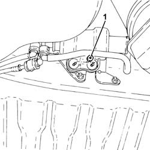
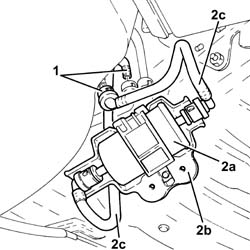
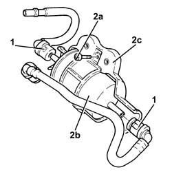
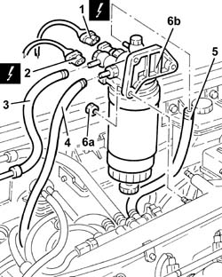
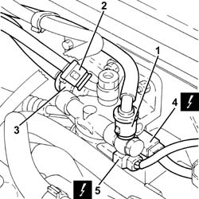
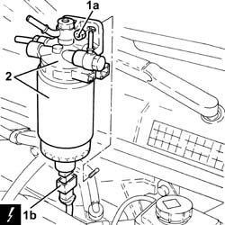
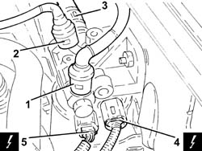
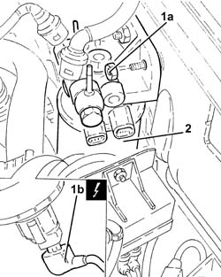

1044B10 fuel filter assembly - r + r or replace
- Path
- Procedures > 10 ENGINE > 1044 FUEL CIRCUIT PUMP/AND DEVICES > 1044B fuel filters > 1044B10 fuel filter assembly - r + r or replace
- Kind
- repair procedure (removal / refitting; the operation number is the code)
- Applies to
- engines: 2.0 JTS, 1.9 JTD 8v , 1.9 JTD 16v, 2.0 JTS, 2.4 JTD 10v, 2.4 JTD 20v; all production periods
- Interactive page
- https://sloeber94.github.io/elrnDB-a156/en/#/3237725
Applies to: engines: 2.0 JTS, 2.0 JTS; all production periods
 Removing
Removing
 Refitting
RefittingPosition the vehicle on the ramp.
1. Undo the nuts fixing the fuel filter assembly to the mounting bracket.

Applies to: engines: 2.0 JTS, 2.0 JTS; all production periods
1. Disconnect the rapid connectors for the fuel inlet and outlet pipes.
2. Remove the fuel filter (2a), complete with protection (2b) and pipes (2c).

Applies to: engines: 2.0 JTS, 2.0 JTS; all production periods
1. At the bench, disconnect the rapid connectors and remove the fuel inlet and outlet pipes from the filter.
2. Undo the bolt (2a) and separate the fuel filter (2b) from the protection (2c).

Applies to: engines: 2.0 JTS, 2.0 JTS; all production periods
Refitting
RemovingJoin the fuel filter to the protection and secure them using the bolt.
Place the fuel inlet and outlet pipes back in their housings, connecting the rapid connectors to the filter.
Place the fuel filter complete with protection and pipes back in the housing.
Connect the rapid connectors for the fuel inlet and outlet pipes.
Tighten the nuts fixing the fuel filter assembly to the mounting bracket.
Remove the car from the ramps.
Applies to: engines: 1.9 JTD 8v , 2.4 JTD 10v; all production periods
Removing
RefittingMake sure that the ignition is off (STOP position), then disconnect the negative battery terminal (refer to op. 5530B10 battery - r+r ).
1. Disconnect the electrical connection from the thermal switch for the fuel heater.
 | Name | Connector |
|---|---|---|
1 | Diesel heater resistance |
2. Disconnect the electrical connection from the fuel pre-heating device.
| Name | Connector |
|---|---|---|
2 | Diesel heater resistance |
3. Disconnect the supply pipe from the tank from the fuel filter.
4. Disconnect the supply pipe to the pressure pump from the fuel filter.
5. Disconnect the supply pipe to the return manifold from the fuel filter.
6. Undo the nuts (6a) and remove the complete fuel filter (6b).

Applies to: engines: 1.9 JTD 8v , 2.4 JTD 10v; all production periods
Refitting
RemovingFit a complete new fuel filter and fix it using the nuts.
Connect the fuel supply pipe to the return manifold to the fuel filter.
Connect the supply pipe to the pressure pump to the fuel filter.
Connect the fuel return pipe from the tank to the fuel filter.
Connect the electrical connection to the fuel pre-heating device.
Connect the electrical connection to the thermal switch for the fuel heater.
Connect the negative (-) battery terminal.
Applies to: engines: 1.9 JTD 16v; all production periods
Removing
RefittingPosition the vehicle on the ramp.
Proceed with removal 1016A10 sound-proofing cover - r + r .
Ensure that the ignition key is in the OFF position, then disconnect the negative battery terminal (-).
| Name | Connector |
|---|---|---|
- | Battery |
Proceed with removal 7055B54 under-engine guard - r r .
1. Disconnect the quick-release connector for the front fuel supply pipe, fuel filter side.
2. Disconnect the rapid attachment on the fuel return pipe to the fuel return manifold pipe, fuel filter side.
3. Disconnect the quick-release connector for the fuel supply pipe to the pressure pump, fuel filter side.
4. Disconnect the electrical connection from the fuel temperature sensor.
| Name | Connector |
|---|---|---|
4 | Fuel temperature sensor |
5. Disconnect the electrical connection from the fuel pre-heating device.
| Name | Connector |
|---|---|---|
5 | Fuel temperature sensor |

Applies to: engines: 1.9 JTD 16v; all production periods
1. Undo the nuts (1a), raise the fuel filter sufficiently to disconnect the electrical connection from the water presence sensor in the fuel filter (1b).
| Name | Connector |
|---|---|---|
1b | Water in diesel filter sensor |
2. Remove the fuel filter.

Applies to: engines: 1.9 JTD 16v; all production periods
Refitting
RemovingConnect the electrical connection to the water-in-fuel filter sensor, then refit the complete fuel filter in its seating and secure with its nuts.
Connect the electrical connection to the fuel pre-heating device.
Connect the electrical connection to the fuel temperature sensor.
Connect the quick-release connector for the fuel supply pipe to the pressure pump, fuel filter side.
Connect the rapid attachment of the front fuel return pipe to the fuel return manifold pipe, fuel filter side.
Connect the quick-release connector for the front fuel supply pipe, fuel filter side.
Proceed with refitting 7055B54 under-engine guard - r r .
Connect the negative (-) battery terminal.
Proceed with refitting 1016A10 sound-proofing cover - r + r .
Remove the car from the ramps.
Applies to: engines: 2.4 JTD 20v; all production periods
Removing
RefittingEnsure that the ignition key is in OFF position, then disconnect the battery negative terminal (-).
| Name | Connector |
|---|---|---|
- | Battery |
Proceed with removal 1016A10 sound-proofing cover - r + r .
1. Disconnect the quick-release connector for the front fuel supply pipe, fuel filter side.
2. Disconnect the rapid attachment on the fuel return pipe to the fuel return manifold pipe, fuel filter side.
3. Disconnect the quick-release connector for the fuel supply pipe to the pressure pump, fuel filter side.
4. Disconnect the electrical connection from the fuel temperature sensor.
| Name | Connector |
|---|---|---|
4 | Fuel temperature sensor |
5. Disconnect the electrical connection from the fuel pre-heating device.
| Name | Connector |
|---|---|---|
5 | Fuel temperature sensor |

Applies to: engines: 2.4 JTD 20v; all production periods
1. Undo the nuts (1a), raise the fuel filter sufficiently to disconnect the electrical connection from the water presence sensor in the fuel filter (1b).
| Name | Connector |
|---|---|---|
1b | Water in diesel filter sensor |
2. Remove the complete fuel filter.

Applies to: engines: 2.4 JTD 20v; all production periods
Refitting
RemovingConnect the electrical connection to the water-in-fuel filter sensor, then refit the complete fuel filter in its seating and secure with its nuts.
Connect the electrical connection to the fuel pre-heating device.
Connect the electrical connection to the fuel temperature sensor.
Connect the quick-release connector for the fuel supply pipe to the pressure pump, fuel filter side.
Connect the rapid attachment of the front fuel return pipe to the fuel return manifold pipe, fuel filter side.
Connect the quick-release connector for the front fuel supply pipe, fuel filter side.
Proceed with refitting 1016A10 sound-proofing cover - r + r .
Connect the negative (-) battery terminal.
Topics linked from this page (8)
- 1016A10 sound-proofing cover - r + r
- 5530B10 battery - r+r
- 7055B54 under-engine guard - r r
- A1B Battery ( BATTERY NEGATIVE )
- K31 Water in diesel filter sensor
- K81 Fuel temperature sensor
- O20A Diesel heater resistance ( ENGINE )
- O20B Diesel heater resistance ( ENGINE )
Topics that link to this page (13)
- B10 ENGINE DOES NOT START / UNDER NO CIRCUMSTANCES
- B16 ENGINE STARTS WITH DIFFICULTY'
- B20 ENGINE STARTS, AND CUTS OUT STRAIGHT AWAY
- D04 ENGINE NOT RUNNING SMOOTHLY
- D10 ENGINE IDLE IRREGULAR
- D21 ENGINE CUTS OUT WHILST DRIVING
- X01 EXCESSIVE FUEL CONSUMPTION
- 1044B20 fuel filter filtering element - replace
- 1044D10 fuel heater - r + r
- 1060G30 water presence sensor on fuel filter r r
- 1060G70 vacum tank for controlling engine air intake r r
- 1080D34 engine oil vapour separator - r + r
- 5530A10 alternator - r+r